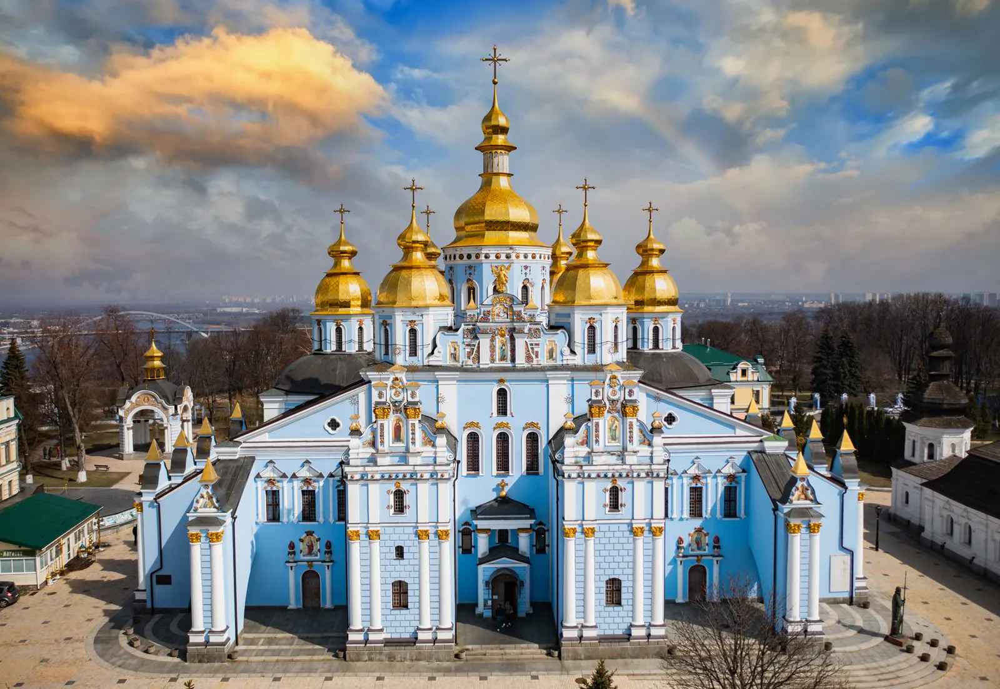
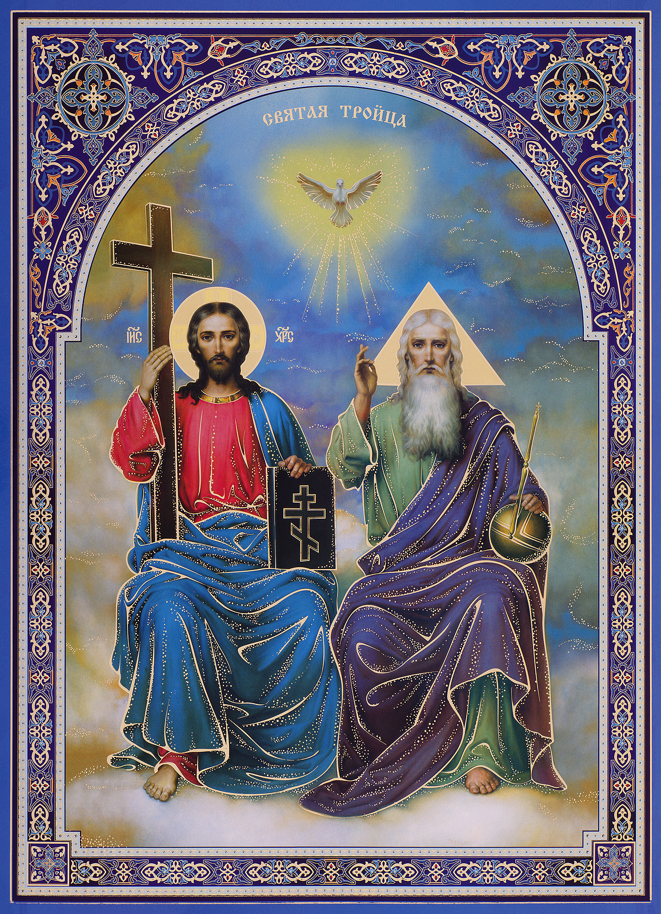
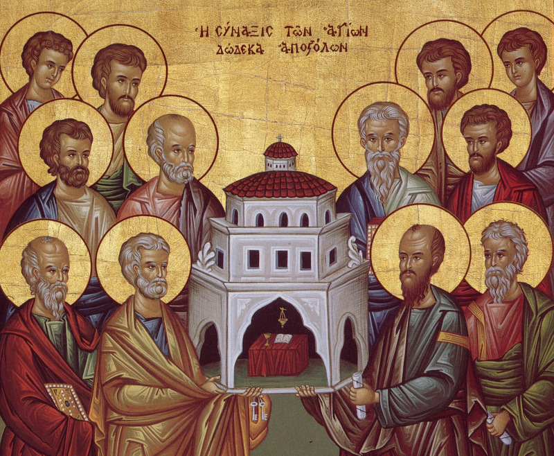
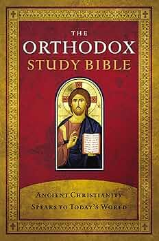

True Church of Christ
The Eastern Orthodox Church
Apostolic Foundations
The Eastern Orthodox Church traces its roots directly back to Jesus Christ and the Apostles. It was born out of the earliest Christian communities established in the 1st century, particularly in ancient centers like Jerusalem, Antioch, Alexandria, and Constantinople.
The Church maintains that it has preserved the original, unaltered teachings of the Apostles through an unbroken line of "Apostolic Succession." Historically, the Apostle Andrew is deeply venerated as the founder of the See of Constantinople, which remains the spiritual center of Orthodoxy today.

Mysticism and The Holy Trinity
Orthodox theology places a massive emphasis on the Holy Trinity and the mystery of the Incarnation. They believe deeply in Theosis—the lifelong process of becoming increasingly united with God through grace.
Worship is highly liturgical, engaging all the senses with incense, chanting, and sacred art. Icons (holy paintings of Christ and the saints) are venerated not as idols, but as "windows into heaven," helping believers connect visually and spiritually with the divine reality.

A Global Expansion
From the 1st century to the 11th century, the Eastern and Western churches were united. Following the Great Schism of 1054, the Orthodox Church maintained its distinct Eastern identity.
Missionaries like Cyril and Methodius spread the faith from the Mediterranean deep into Eastern Europe and the Slavic nations, inventing the Cyrillic alphabet to translate the Bible. Today, despite surviving centuries of Ottoman rule and Soviet persecution, the Orthodox Church has spread across every continent, with over 220 million members globally.

Guardians of Holy Tradition
The Eastern Orthodox Church places profound importance on the writings, teachings, and lives of the Early Church Fathers. These were the bishops, theologians, and martyrs of the first few centuries who defended the faith against early heresies and helped compile the New Testament canon.
Key figures include the "Three Holy Hierarchs": St. Basil the Great, St. Gregory the Theologian, and St. John Chrysostom. Their liturgies, prayers, and theological insights form the backbone of Orthodox worship today. The Church views the Fathers not just as historical figures, but as spiritually enlightened guides whose teachings carry deep authority.

The Orthodox Canon
The Orthodox Church uses the oldest translation of the Old Testament, the Greek Septuagint, which was the version used by Jesus and the Apostles. Because of this, the Orthodox Bible is much larger, containing up to 76 or 78 books depending on the regional tradition.
It includes the "Deuterocanonical" books (which Protestants later removed in the 16th century). Books like Tobit, Judith, Wisdom of Solomon, Sirach, and 1-3 Maccabees are deeply cherished. The Orthodox view the Bible not just as a book to read, but as a sacred liturgical text to be sung and lived out within the tradition of the Church.
